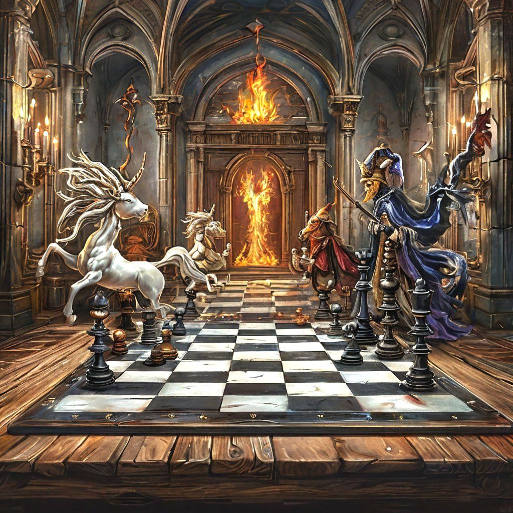
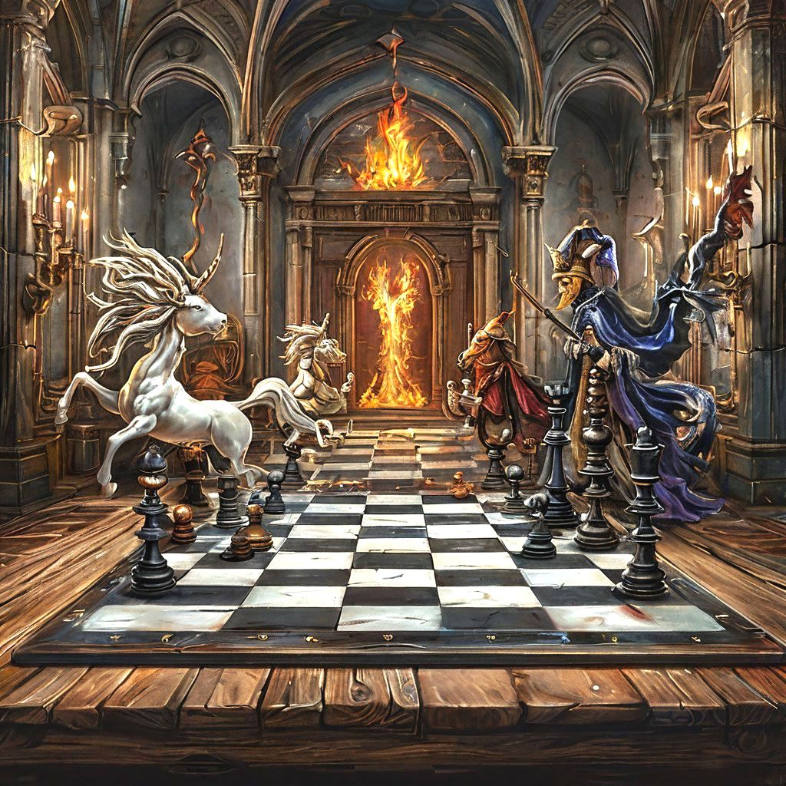

A Sakk Alapjai

A sakk egy ősi stratégiai játék, amely évszázadok óta fejleszti az emberek gondolkodását. A játék célja az ellenfél királyának mattolása, miközben saját királyunkat védelmezzük.
A Sakktábla
A sakktábla 64 mezőből áll, amelyek felváltva világos és sötét színűek. A tábla 8x8-as négyzetrács, ahol minden játékos 16 bábuval kezd.

A Bábuk Mozgása
Minden bábu egyedi módon mozog a táblán:
- Király: Egy mezőt léphet bármely irányba
- Vezér: Bármely irányba tetszőleges számú mezőt léphet
- Bástya: Függőlegesen és vízszintesen mozoghat
- Futó: Átlósan mozoghat
- Huszár: L-alakban mozog
- Gyalog: Előre egy mezőt léphet, első lépésben kettőt is
Alapvető Stratégiák

A sikeres sakkjáték kulcsa a jó stratégia. Íme néhány alapvető koncepció:
Centrum Kontroll
A tábla közepének ellenőrzése kulcsfontosságú a sikeres játékhoz. A centrum kontrollja nagyobb mozgásteret biztosít és korlátozza az ellenfél lehetőségeit.
Fejlődés

A játék elején fontos a tisztek gyors fejlesztése. Hozza ki a bástyákat, futókat és huszárokat kezdő pozíciójukból, hogy aktívan részt vehessenek a játékban.
Népszerű Megnyitások

A megnyitás a játszma első néhány lépése, amely meghatározza a későbbi stratégiai lehetőségeket:
Olasz Megnyitás
1.e4 e5 2.Hf3 Hc6 3.Fc4 - Ez egy klasszikus megnyitás, amely gyors fejlődést és erős centrumot biztosít.
Szicíliai Védelem

1.e4 c5 - A fekete egyik legerősebb válasza e4-re, amely dinamikus játékot eredményez.
Kapcsolat
 
